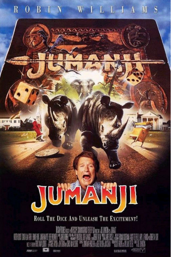
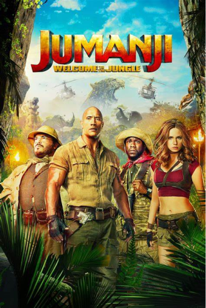
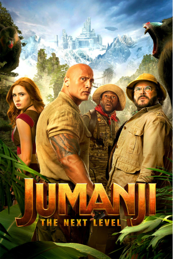
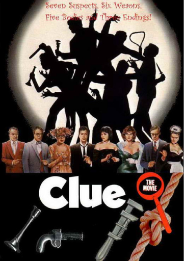

Here is the list of important films in the context of the topic
In the original film Jumanji from 1995, two children discover a mysterious board game that releases dangerous elements from the jungle with each roll of the dice. With the help of Alan Parrish, a man trapped in the game for decades, they must finish the game to set things right. This film combines adventure and magic, turning the board game into an immersive experience where each turn brings unpredictable challenges. Jumanji explores the idea of games as portals to fantastic worlds, a recurring theme in the evolution of modern board games.
Jumanji: Welcome to the jungle
In this modernized version of the 1995 classic, four teenagers discover a mystical video game that literally sucks them into its virtual world. Transformed into avatars with specific skills, they must survive in the jungle by solving puzzles and overcoming obstacles. The film combines adventure and humor, while exploring the dynamics of teamwork. This version reimagines the concept of board games by integrating elements of modern video games.
In this sequel, the protagonists inadvertently return to the world of Jumanji to save a friend. However, the game has changed, offering new settings and unexpected challenges. The characters find themselves switched into different avatars, which adds a new humorous and strategic dimension to the story. This film illustrates the evolution of the board game into more complex experiences, while retaining the classic elements of adventure and entertainment.
Adapted from the famous board game Clue, Clue features six mysterious guests who find themselves in a mansion to solve a series of murders. Each character represents a game piece, and the film explores deduction mechanics by engaging the viewer in a closed-room investigation. With its multiple alternative endings, Clue parodies the whodunit genre while offering a playful tribute to the world of board games.
